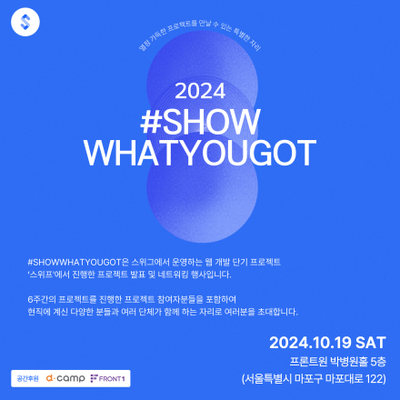

Information Technologyのそれぞれの頭文字を取って
作った用語。
ITSIプロジェクト全過程の業務と段階別知識を説明できるように教える講義
- 
Show whatyougotとは、Swigが運営するウェブ開発短期プロジェクト「Swiff」で行うプロジェクト
発表およびネットワーキングイベントです。 プロジェクト型IT職務行事は、IT、SW開発分野に関心のある人々を集めて全過程無料教育をさせ、
参加青年たちに限って就職支援までしてくれる韓国の行事です。